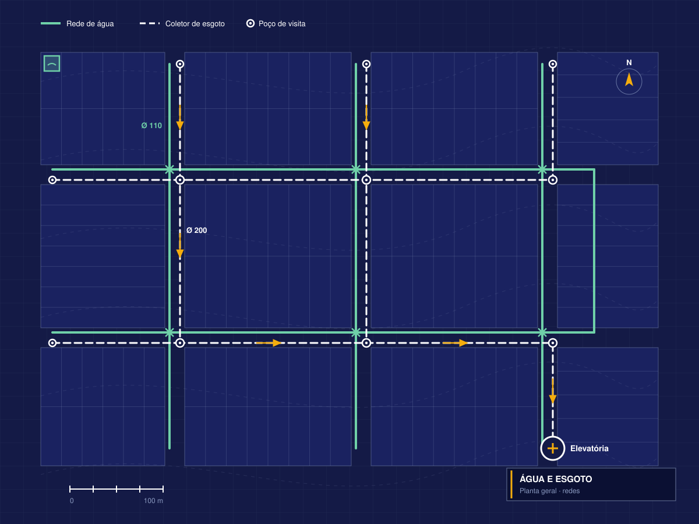

Projeto de Saneamento: Água e Esgoto
Redes de abastecimento de água e coleta de esgoto projetadas para aprovar na concessionária e custar menos na obra, priorizando o escoamento por gravidade.
Seu projeto pronto em até 15 dias úteis

Redes pensadas para custar menos na obra e na operação
Estudamos o relevo e o traçado viário para priorizar a gravidade e reduzir a necessidade de estações elevatórias de esgoto. Antes da entrega, conferimos as redes no modelo 3D com a drenagem, mesmo quando esse projeto é de outro profissional, se ele for em BIM. Depois, acompanhamos a aprovação na concessionária.
O que você recebe
- Projeto de rede de abastecimento de água
- Projeto de rede coletora de esgoto
- Redes externas (adutora de água, emissário de esgoto, recalque, etc.) quando necessário
- Estudo de alternativas para evitar ou minimizar elevatórias
- Compatibilização em BIM com drenagem
- Memorial, peças técnicas e ART
- Documentação para aprovação na concessionária, com atendimento às devolutivas
Benefícios
-
Menor custo de implantação e operação
Estudo de alternativas para evitar ou minimizar elevatórias.
-
Aprovação mais fluida na concessionária
Projeto consistente desde a primeira entrega.
-
Nenhuma surpresa em campo
Redes compatibilizadas com os demais projetos.
Uma elevatória evitável pode custar caro para sempre
Quando o saneamento é projetado sem considerar o relevo e o traçado, o esgoto deixa de escoar por gravidade. Surgem então estações elevatórias caras para aprovar, construir e operar.
Como funciona
- Você envia o urbanístico, a topografia/terraplenagem e a diretriz da concessionária, se já tiver
- Retornamos com escopo, prazo e valor
- Desenvolvemos e entregamos o projeto integrado em BIM
- Entregamos e revisamos conforme as devolutivas da concessionária
Perguntas frequentes
É possível evitar a estação elevatória no meu loteamento?
Depende do relevo e do traçado, mas esse é sempre um dos objetivos do nosso projeto. Avaliamos as alternativas desde o início.
Quem aprova o projeto?
A concessionária do município, como Sabesp, SANASA ou SAAE.
Vocês conduzem a aprovação na concessionária?
Sim, temos pacotes personalizados que incluem a gestão completa da aprovação.
Qual o prazo?
Depende da área e da complexidade da gleba. Geralmente em torno de 15 dias úteis.
Atendem quais regiões?
Elaboramos projetos para todo o Brasil, e somos especialistas em trâmites de aprovação no estado de São Paulo.
Análises técnicas relacionadas
Obra liberada após 45 dias de canteiro parado
Em um loteamento em São José do Rio Preto/SP, redes projetadas por engenheiros diferentes apresentaram interferências com as máquinas já em campo. Fomos contratados para refazer os projetos de água, esgoto e drenagem compatibilizados em 3D. Reapresentamos o material aos órgãos e a obra foi liberada.
Saneamento bem projetado é economia na obra e na operação
- (19) 2218-3135
- contato@athomprojetos.com.br
- Av. Antônio Baptista Piva, 2718, Sala 5, Paulínia/SP
- Segunda a sexta, das 8h às 18h
Se precisar, também desenvolvemos os projetos de terraplenagem e drenagem do empreendimento.